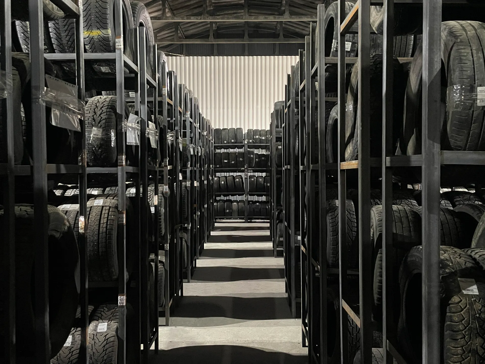
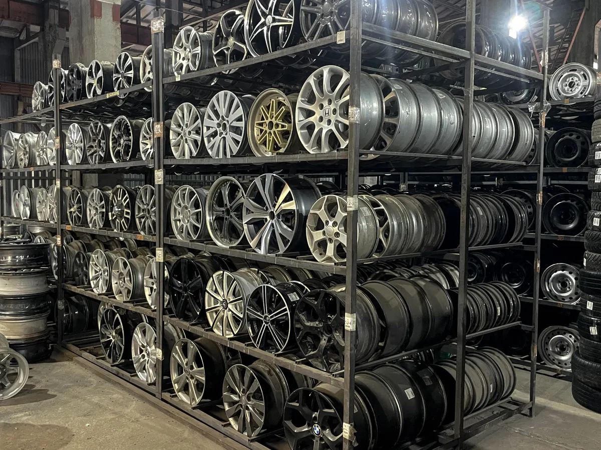
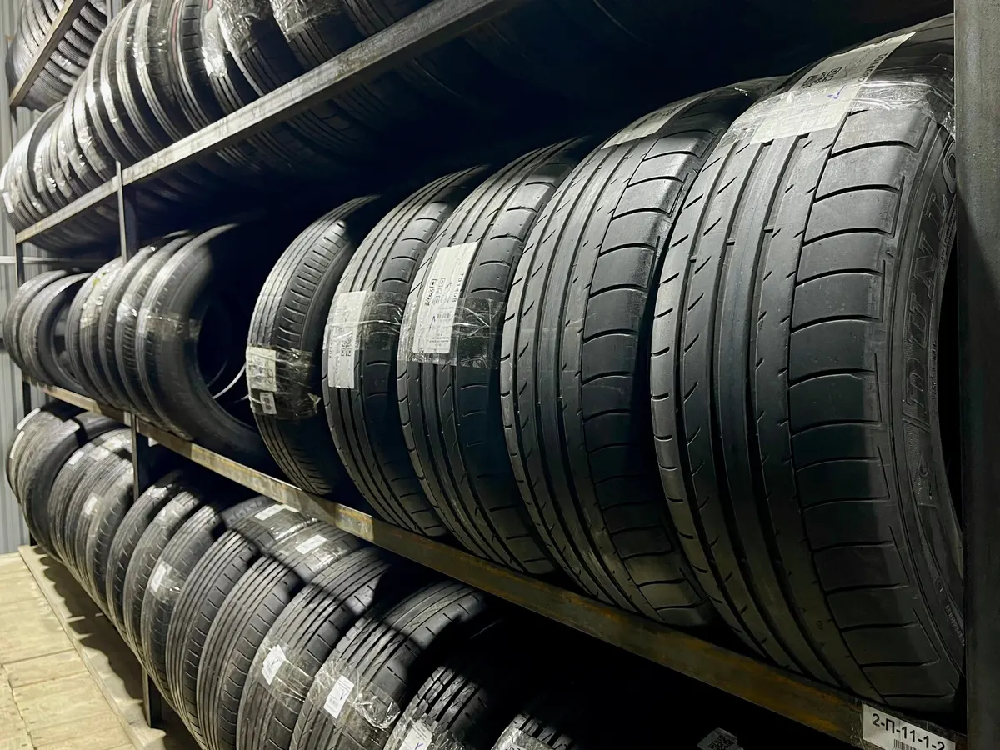
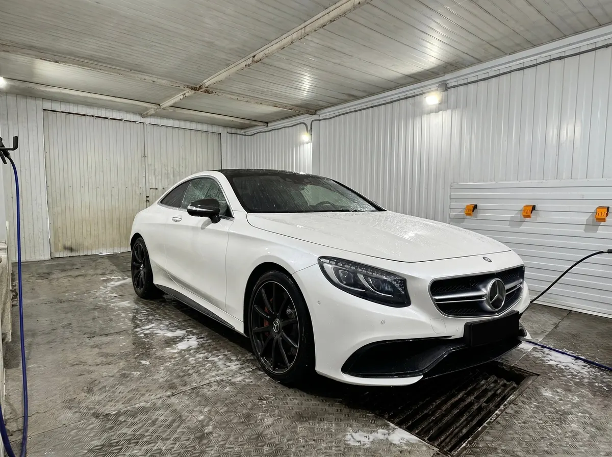

Шины, диски, шиномонтаж · Пермь
Шины и диски в Перми: подберём, поставим, помоем машину
Дзержинского, 61. Новая и б/у резина, диски, шиномонтаж, балансировка, хранение шин и автомойка. Работаем каждый день с 9:00 до 21:00.
- Каждый день с 9:00 до 21:00
- Шины и диски в наличии, шиномонтаж на месте
- Хранение шин и автомойка

Услуги и цены
Цену называем по радиусу колёс и виду работ, при записи.
Услуги
- Шиномонтаж (переобувка)уточнить
- Балансировка колёсуточнить
- Хранение шинуточнить
- Автомойкауточнить
Шины и диски
- Подбор комплекта резиныуточнить
- Б/у резина и дискиуточнить
Как проходит
- 01
Записываетесь на время
Позвоните или напишите в Telegram либо ВКонтакте.
- 02
Приезжаете по адресу
Дзержинского, 61.
- 03
Подбираем резину, переобуваем, балансируем
Покажем варианты и всё расскажем.
- 04
Забираете машину
При желании её помоют на нашей мойке.



Что отмечают клиенты в отзывах
Показывают варианты и всё рассказывают
Клиент приехал за комплектом резины, ему показали три варианта.
Шиномонтаж, хранение и мойка в одном месте
Об этом пишут постоянные клиенты.
Приятные цены
Об этом пишут в отзывах.
Отзывы с Яндекс.Карт
«Обращаюсь уже не первый год в данный сервис. Приехала заменить шины а у ребят появилось хранение🛞 Но больше всего меня обрадовало что теперь и машину можно помыть за маленькую стоимость! Ниже цены в городе я еще не видела.»
Елизавета Мизёва · 9 апреля 2026
«Хорошее место, приехал покупать комплект резины, показали три варианта, шиномонтаж тоже тут. Резина хорошая и цены приемлемы. Сделали всё быстро. Есть автомойка. Советую👍»
Тагир Мансуров · 28 апреля 2026
«Все супер! Цены очень приятные, приехал, все показали, все рассказали и сразу же сделали. Качественно, быстро, парни мастера своего дела, рекомендую»
Григорий Бобер · 15 января 2026
Отзывы с карточки на Яндекс.Картах, без правок.
Частые вопросы
Когда работаете?
Каждый день с 9:00 до 21:00.
Где вас найти?
Улица Дзержинского, 61, Пермь.
Есть ли хранение шин?
Да. Условия уточняйте при записи.
Можно ли помыть машину?
Да, на территории есть автомойка.
Как записаться?
Позвоните или напишите в Telegram либо ВКонтакте: кнопки в блоке контактов.
Запишитесь на удобное время
- Адрес
- ул. Дзержинского, 61, Пермь
- Часы
- Ежедневно, 09:00–21:00
- Телефон
- +7 (342) 225-29-30